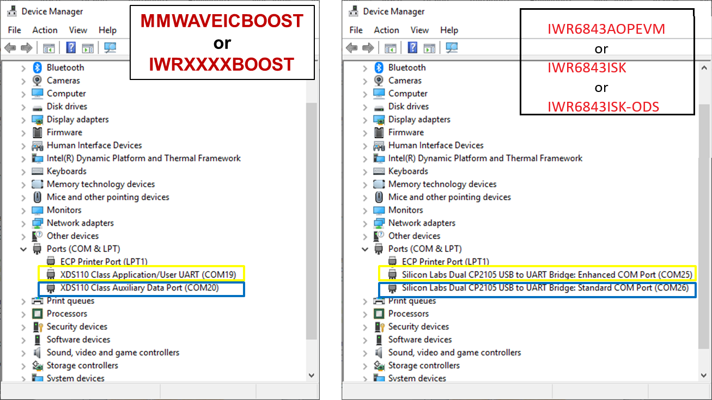
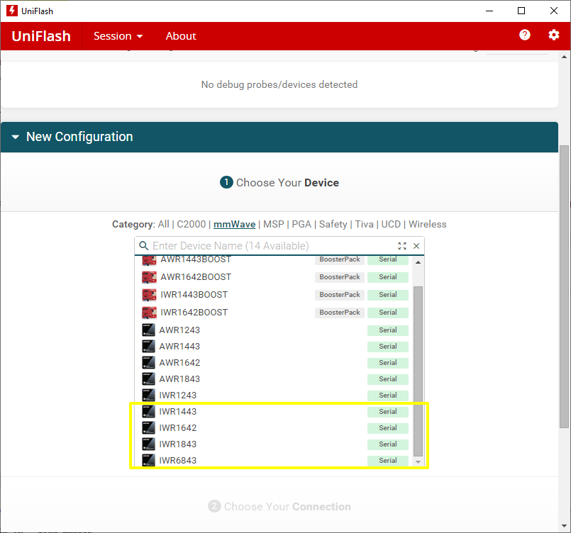
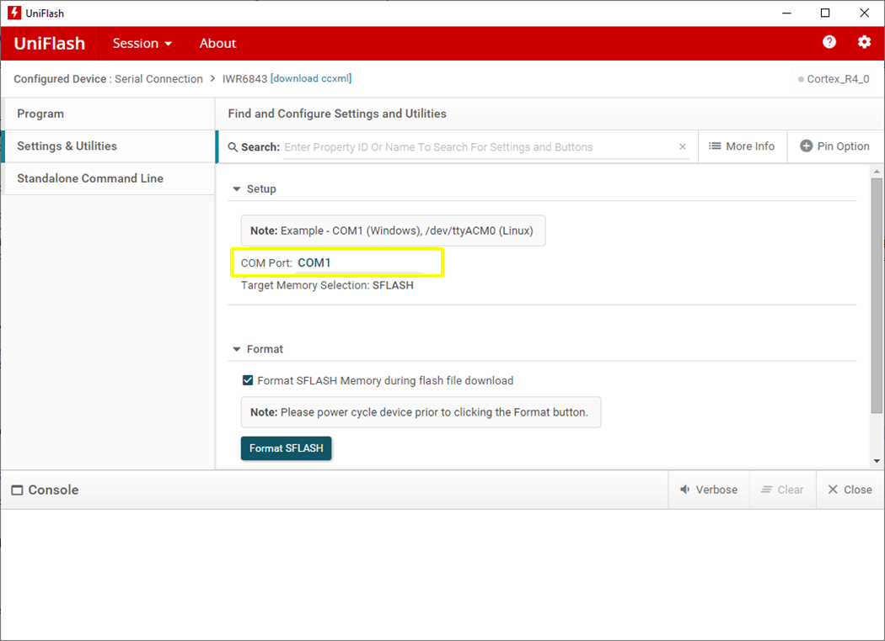
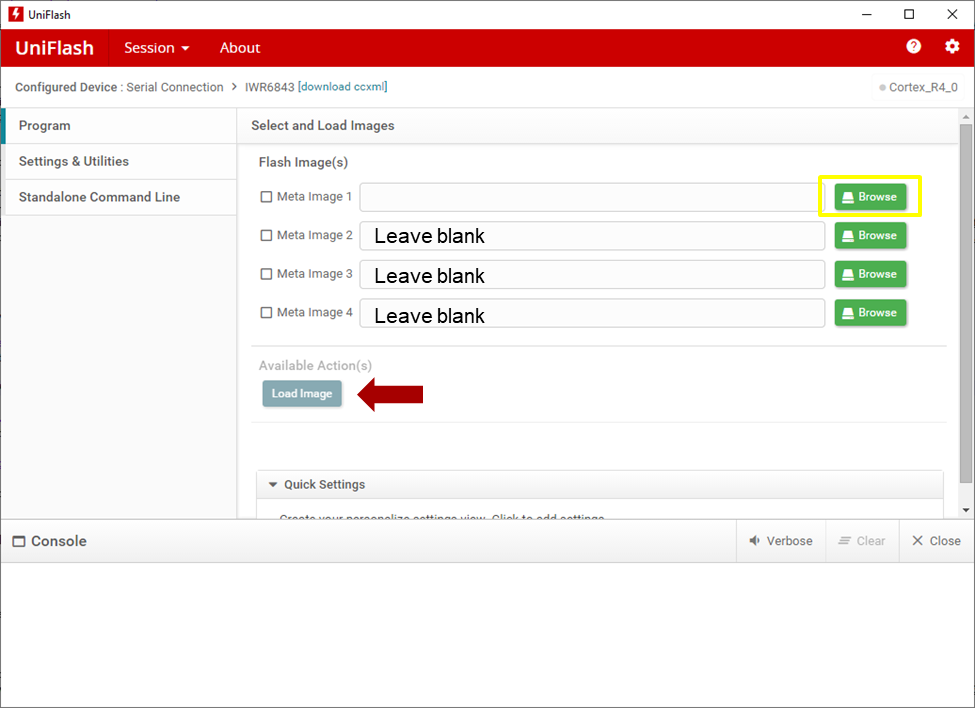

Flash the EVM using UniFlash
===========
# 0. Requirements
* The mmWave EVMS should already be setup for **Flashing Mode** according to the appropriate hardware setup guides:
* Installation of the **UniFlash tool** ([Download offline tool](http://www.ti.com/tool/UNIFLASH) or use the [Cloud version](https://dev.ti.com/uniflash/#!/) )
* PC with recommended OS: Windows 7 or 10
# 1. Get COM port numbers using Device Manager
* With the EVM powered and connected to your PC, open up **Device Manager**
* The EVM exports two virtual COM ports as shown below. __Note the correct COM # for each of the two ports for use later.__ (Actual COM numbers may be different as it can vary from PC to PC)

The naming of the ports varies between the MMWAVEICBOOST and IWR6843xxxx in Modular mode. In the image above, the ports are color coded according to equivalent functionality. The table below lists the generic, short hand name for each port and a description of it's function. For the remainder of this guide the generic name will be referenced.
Color |Name in Device Manager| Generic Name | Port Function
------|----------------------|--------------|-----------------
Yellow | User UART or Enhanced COM Port | CFG Port | Used for passing configuration data and firmware to the EVM
Blue | Data Port or Standard COM Port | Data Port | Used to send processed radar data output
[[y! COM Port Driver
If the COM ports do not appear as above, driver installation is required. Install the appropriate driver, restart the PC, and try again.:
EVM Type | Driver Required | Download Location
---------|-----------------|-----------------
MMWAVEICBOOST | Latest [XDS Emulation Software](http://processors.wiki.ti.com/index.php/XDS_Emulation_Software_Package) | http://processors.wiki.ti.com/index.php/XDS_Emulation_Software_Package
IWR6843AOPEVM, IWR6843ISK Rev.C, IWR6843ISK-ODS Rev.B | Latest [Silicon Labs CP210x USB to UART Bridge VCP Drivers](https://www.silabs.com/products/development-tools/software/usb-to-uart-bridge-vcp-drivers) | https://www.silabs.com/products/development-tools/software/usb-to-uart-bridge-vcp-drivers
]]
# 2. Load Image Using UniFlash
1. Open the **UniFlash tool**
2. In the New Configuration section, locate and select the device corresponding to your EVM type

3. After the correct device is selected, click **Start** to proceed.
4. Click the **Settings & Utilities** tab. Under Setup, fill the **COM Port** text box with the port number corresponding to the **CFG_Port** noted earlier. Ex: According to the above Device Manager screenshots, COM1 should be changed to COM19 or COM25.

5. Click the **Program** tab. For **Meta Image 1** click on **Browse** and locate the image (.bin file) to be flashed onto the device. After clicking OK, the name and size of the selected binary should appear. Leave Meta Image 2-4 blank.
The .bin file to flash and it's location is specified in the User's Guide of each lab.

6. Power cycle the device by toggling the NRST switch on the EVM.
7. After a .bin file has been selected, the **Load Image** button will become enabled. Click the **Load Image** button.
[[g! Successful Flash Procedure
UniFlash’s console should indicate: [SUCCESS] Program Load completed successfully
]]
[[r Error while Flashing
Common causes of flashing failure are:
* Wrong COM port number. Ensure that the number associated with CFG_Port (User UART or Enhanced) is entered.
* Incorrect SOP Mode. Check the jumpers/switches for the SOP Mode as specified in the hardware setup guides.
* Starting UniFlash before EVM is setup and powered. With EVM setup correcly and powered, close and then reopen UniFlash and try again.
* COM port being held by other programs. Close any visualizers, terminal windows, or other software that could be preventing UniFlash from connecting to the COM port.
]]
<form>
<input type="button" value="Flashing Complete. Return to User's Guide." onClick="javascript:history.go(-1)" />
</form>
Need More Help?
===========
* Consult the [UniFlash Quick Start Guide](http://downloads.ti.com/ccs/esd/uniflash/docs/latest_qsguide.html)
* Search for your issue or post a new question on the [mmWave E2E forum](https://e2e.ti.com/support/sensor/mmwave_sensors/f/1023)